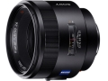

器材库 > 35mm画幅AF定焦镜头 > Planar T* 50/1.4 ZA SSM

详细规格
镜头类型
标准镜头
发布日期
2013-02-21
厂家推荐价格
164,850.00 （日元）
焦距
50mm
最大光圈
f/1.4
最小光圈
f/22
视角（对角）
47° （135画幅） 32°（APS画幅）
镜头结构
8片/5组
非球面镜片
2片
光圈叶片
9片
最近对焦距离
45cm
最大放大倍率
0.14倍
滤镜口径
72mm
镜头卡口
Minolta/Konica-Minolta/Sony AF
防抖
否
颜色
黑色
尺寸
81 x 71.5mm
重量
518g
ravparty2015-07-15 13:045 分
操作性 5.00耐用性 5.00性价比 5.00解像力 5.00色彩还原 5.00机械结构 5.00
CONPENTAX992015-03-23 04:035 分
操作性 5.00耐用性 5.00性价比 5.00解像力 5.00色彩还原 5.00机械结构 5.00
荣五爷2015-03-23 04:015 分
操作性 5.00耐用性 5.00性价比 5.00解像力 5.00色彩还原 5.00机械结构 5.00
多跑多看2014-12-30 11:005 分
操作性 5.00耐用性 5.00性价比 5.00解像力 5.00色彩还原 5.00机械结构 5.00
zg072013-11-07 16:454.92 分
操作性 5.00耐用性 5.00性价比 4.50解像力 5.00色彩还原 5.00机械结构 5.00
金色旋风2013-11-06 10:374.42 分
操作性 5.00耐用性 4.00性价比 3.50解像力 4.50色彩还原 5.00机械结构 4.50
muduo2013-10-11 13:494.92 分
操作性 5.00耐用性 5.00性价比 4.50解像力 5.00色彩还原 5.00机械结构 5.00
gaohacky2013-09-28 15:215 分
操作性 5.00耐用性 5.00性价比 5.00解像力 5.00色彩还原 5.00机械结构 5.00
CONPENTAX992013-09-28 12:54
zhzqq0072013-08-15 23:344.67 分
操作性 5.00耐用性 5.00性价比 3.00解像力 5.00色彩还原 5.00机械结构 5.00
sunstarsun2013-07-10 13:12
sunstarsun2013-07-04 09:014.75 分
操作性 5.00耐用性 5.00性价比 4.00解像力 5.00色彩还原 4.50机械结构 5.00
产品图 / 样片
评测 / 相关文章
- 德系标准力量 索尼Planar T* 50mm F1.4 ZA SSM评测 （存档）
- ［试用］海外评测：索尼Planar T* 50/1.4 ZA SSM （存档）
- ［试用］索尼Planar T* 50/1.4 ZA SSM外观图赏 （存档）
- ［资讯］索尼发布α58、NEX-3N等多款新品 （存档）